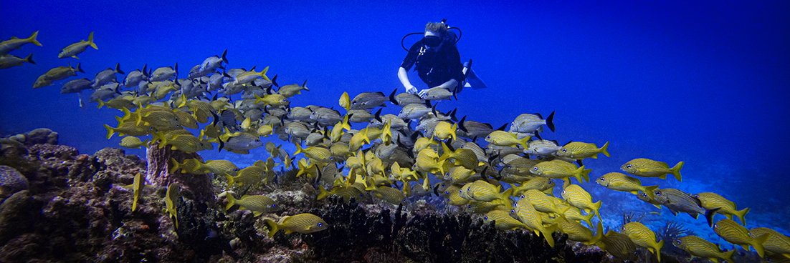
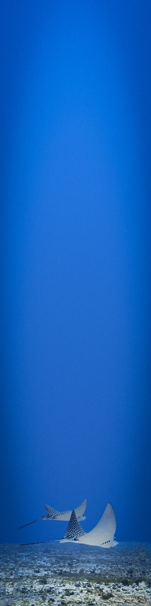
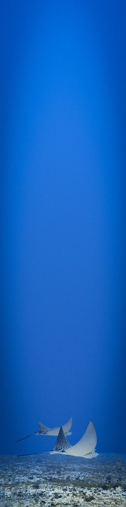

If variety is the spice of life then Cancun is the spiciest diving city in all of Mexico. Wreck dives, drift dives, night dives, cavern dives, cave dives, shallow dives, deep dives and bull shark dives are all available within two hour travel from our store. Explore our various dive sites below and begin your adventure tomorrow.
Our local dives sites are all protected within "Cancun and Isla Mujeres National Park" and are therefore in a very healthy condition. This has resulted in us commonly seeing of a wide array of sea life which might be very rare to non-existent in other parts of the Caribbean.
We begin each morning with a two tank dive trip at two of our deeper dive sites. This is promptly followed by another two tank dive trip in the afternoon, either on two shallow reefs or Cancun's Under Water Museum and a nearby shallow reef.
Morning Dives
Mesoamerican Reefs
Mondays, Wednesdays, Fridays and Sundays
The Mesoamerican Reef in the Caribbean Basin is the largest coral reef in the Atlantic Ocean and the 3rd largest in the world after The Great Barrier Reef in Australia and the Apo Barrier Reef in the Philippines. The reef extends nearly 700 miles from the Cancún to the Bay of Islands in Honduras and is home to more than 500 species of fish and 65 types of coral. Every Monday, Wednesday, Friday and Sunday, we invite you to join us as we explore this reef system on a two tank tour as we visit some of the healthiest reefs in the Atlantic.
The following is a list of dive sites we commonly frequent:
| Dive Site | Depth |
|---|---|
| Aristos | 45ft (14m) |
| El Tunel | 55ft (16m) |
| Grampin | 55ft (16m) |
| Herradura | 55ft (16m) |
| La Losa | 55ft (16m) |
| Punta Negra | 55ft (16m) |
| San Miguel | 55ft (16m) |
Please do let us know if you have a site you would particularly like to visit and we will do our best to accommodate you. However also please be aware that certain sites are very suseptible to both weather and changes in water currents and so may not alway be available.
Wreck & Reef
Tuesdays, Thursdays and Saturdays
In early 2000's, Mexico sunk five former mine-sweeping vessels off the coast of the Yucatan Peninsular as artificial reefs. Two of these ships were gutted of their wiring and sunk in Cancun specifically for divers to enter and explore.
Both wrecks are located approximately 25 minutes, by boat, from our dock in an area which commonly experiences strong currents so they are best visited by self sufficient divers who are confident in their ability to equalize and descend quickly.
After an approximately 20 surface interval, our captain will take you to one of the Mesoamerican Reefs mentioned in the section above, to do a 2nd dive to 55ft (17m).
| Dive Site | Depth |
|---|---|
| C55 Lieutenant Juan de la Barrera | 80ft / 25m |
| C58 General Anaya | 85ft / 26m |
Afternoon Dives
Museum & Reef
7 Days a week
| Dive Site | Depth |
|---|---|
| Musa | 27ft (9m) |
Each afternoon, we cordially invite you to join us as we visit Musa, the world's largest underwater museum. This bucket-list dive is an absolute must for divers visiting the Cancun area and, at only 27ft deep, is also a fantastic option for those of you who haven't been in the water a while and wish to dust off the scuba cobwebs.
Furthermore, if you are traveling with any non-certified friends or family who you wish to introduce to the beautiful sport of scuba diving, our daily non-certification PADI Discover Scuba Diving Program will teach them all the necessary skills to have them join you on this dive tour. Snorkelers are also welcome.
Your second dive of this tour will see you visiting one of the shallow reefs outlined in the section below.
Manchones Reefs
7 Days a week
Located only a few hundred feet away from the underwater museum, we have three shallow reefs which are absolutely resplendent in both animal and coral life:
Jardines Reef is the most northern and is a great place for more experienced divers who have an interest in macro photography. It is also site where we have had the most sightings of the rare splendid toadfish.
Manchones Chico Reef is arguably the healthiest of these three reefs and has a wide variety of fish including, grouper, eel, barracuda, drum fish and porcupine fish to name a few. It also has two short swim-throughs for those who don't mind tight spaces.
Manchones Grande Reef is the best option for divers who are specifically looking for turtles. It also has the added benefit of having a further two Musa sculptures hidden among its corals and numerous locations where lobster seem to enjoy hiding.
| Dive Site | Depth |
|---|---|
| Jardines | 27ft (9m) |
| Manchones Chico | 27ft (9m) |
| Manchones Grande | 27ft (9m) |
Cenote & Night Diving
Available upon request
7 Days a week
Visit our Cenote Diving and Night Diving pages for more details.
 
